Вітальня · журнал «ДентАрт» 2025 №2
Юлія Черепинська: «З 2022 року для мене справжнє щастя — жити й працювати у рідному Харкові. Саме тут я відчуваю, що моє життя і моя справа мають глибокий сенс»
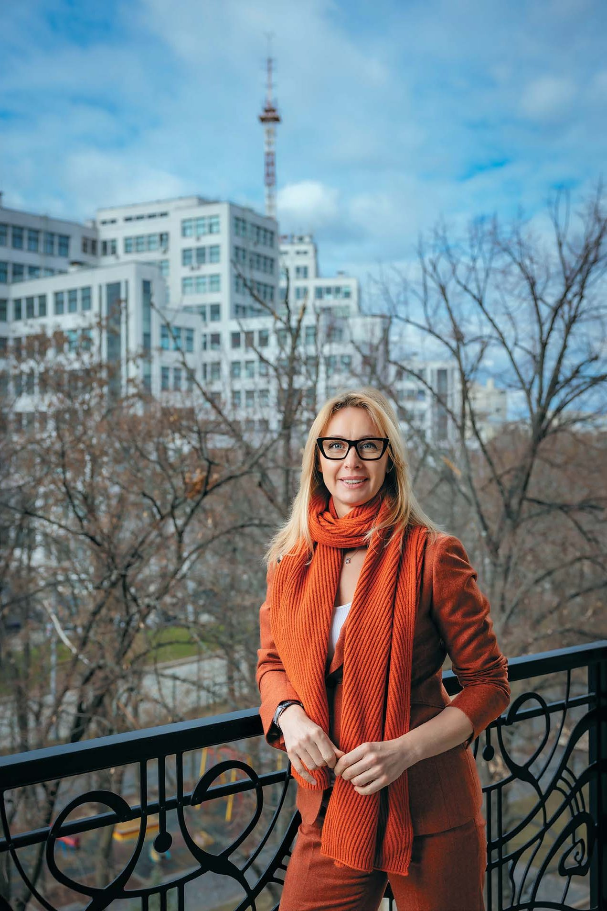
У Вітальні «ДентАрту» — Юлія Анатоліївна Черепинська — лікар-стоматолог, засновниця і директорка навчально-клінічного центру SENSE у Харкові, кандидат медичних наук, магістр педагогіки вищої школи, доцент кафедри терапевтичної стоматології Харківського національного медичного університету. Вона фахівчиня та наставниця в галузях пародонтології і лазерної стоматології, запрошена професорка Університету La Sapienza (Рим), член Міжнародної колегії стоматологів (ICD) та лазерних асоціацій Європи й Америки, авторка численних публікацій та навчальної програми післядипломної освіти «Лазерні технології у стоматології».
Місія «SENSE» — допомагати пацієнтам і передавати знання колегам
— Шановна пані Юліє, найперше хочу запитати про Вашу клініку і навчальний центр SENSE. У чому сенс Сенсу? Як народився цей проєкт, як працює і які плани на майбутнє клініки?
— Щодо концепції нашої клініки, то мета у нас спільна, і я не буду оригінальною, якщо скажу, що сенс полягає в здоров'ї пацієнтів. У нас два напрямки: ми й лікуємо, і навчаємо. Ділимося знаннями з колегами, але найбільше мені подобається визначення, що ми обмінюємося досвідом. Коли ми ділимося знаннями, досвідом і власними напрацюваннями, мені завжди цікаво почути думку колег, адже лікарі-практики мають чимало цінних спостережень і рішень. Проте часто вони соромляться озвучувати їх, бо звикли, що ментори стоять вище. Саме тому я намагаюся організувати навчальний процес так, щоб кожен відчував себе рівним серед рівних. Сенс існування нашого навчального центру полягає в тому, що його двері відкриті для всіх стоматологів — незалежно від віку, рівня знань чи досвіду. Місія нашого центру — створити атмосферу довіри і підтримки, де кожен може без страху прийти й навчитися впевнено володіти сучасним обладнанням, навіть якщо вам понад 50 років і за плечима — 30 років практики.
З 2022 року для мене справжнє щастя — жити й працювати вдома, у рідному Харкові. Саме тут я відчуваю, що моє життя і моя справа мають глибокий сенс: допомагати людям, розвивати сучасну стоматологію та щедро ділитися знаннями з колегами.
— Юліє, Ви поєднуєте роботу у власному приватному проєкті з викладанням терапевтичної стоматології на університетській кафедрі. Як Ви це поєднуєте організаційно і ментально?
— З 2007 року я викладала англомовним студентам, а також російською студентам із країн пострадянського простору: на півтори ставки, потім — на повну, згодом — на пів ставки, планую лише на чверть. Проте після повномасштабного вторгнення рашистів у 2022 році моя педагогічна діяльність поступово зменшувалася. На жаль, іноземних студентів більше немає. Я давно думала про те, щоб залишити університет, і вже робила такі спроби. Але коли минулого літа знову мала намір піти, мене переконали, що моя присутність на кафедрі все ще важлива.
— Багато стоматологів у світі дуже дорожать можливістю працювати на кафедрах університетів, мати звання професора. А для Вас Харківський університет базовий, тому моя порада — тримайтеся його…
— Я дуже ціную Ваші поради, вдячна за них. Гаразд, гаразд, буду триматися…
Потрібно знати біологічні основи взаємодії між лазерною енергією і тканинами
— Ваш проєкт SENSE добре відомий в Україні через своє спрямування на лазерну стоматологію. Але часто здається, що лазери — це лише ефектний маркетинговий підхід для впізнаваності клініки. Чи так це насправді? Чи багато клінік лазерної стоматології в Україні і світі?
— Так, з погляду маркетингу це, можливо, спрацьовує, але пацієнти обирають нас не через слово «лазер» у назві клініки (повна назва клініки — SENSE dental & laser practice), а через довіру, результат і підхід. Кожен стоматолог, який відкриває власну клініку, має визначити для себе основний напрямок, в якому він відчуває себе найсильнішим. Лазери — це мій сильний напрямок, бо я ґрунтовно розібралася в принципах їх використання, розумію біологічні основи взаємодії лазерної енергії з тканинами, здобула значний досвід і добре знаю як переваги, так і обмеження цього обладнання. Я почала вивчати і впроваджувати лазерні технології близько 13 років тому і сьогодні у своїй практиці використовую лазери з довжиною хвилі 450, 650, 940, 980 та 2780 нм.
Мені прикро, коли колеги використовують лазери тільки як маркетинговий інструмент. Один лікар якось зізнався, що придбав лазер лише для того, щоб він у нього був, оскільки пацієнти шукають в інтернеті клініки, де застосовуються лазерні технології. Він сказав: «Можливо, я й не буду використовувати його сам, але зможу показати, що він у мене є. І тоді пацієнти не підуть у сусідню клініку тільки тому, що там є лазер, а у мене немає».
Без ґрунтовного навчання, практичних навичок і підтримки наставника неможливо повноцінно і безпечно почати працювати з лазерами. У лікарів, які купують лазерні прилади, закономірно виникає багато запитань — і я із задоволенням ділюся з ними своїм досвідом. Щоб дати вичерпні відповіді, потрібні час і, безумовно, бажання.
— Наскільки широко використовуються лазерні технології у Вашій клініці? Чи є місце в клініці іншим напрямкам стоматології?
— Лазери я використовую щодня — вони завжди під рукою. Інші спеціалісти SENSE переважно скеровують пацієнтів до мене, якщо є відповідні показання і я присутня в клініці. Якщо ж мене немає — працюють із лазером самостійно. Я завжди наголошую: кожна маніпуляція має бути обґрунтованою, і саме лікар вирішує, коли доцільно застосувати той чи інший тип лазера.
До речі, зараз наш колектив утричі менший, ніж до 24 лютого 2022 року, — 19 осіб. Попри це, він охоплює всі напрямки, і саме цей склад сформувався в епіцентрі буремних подій. Це професійне ядро сильних духом, позитивних харків'ян. Я щаслива щодня працювати з ними — і дуже ціную кожного.
Чому лазери стали частиною моєї практики? Це було пов'язано з роботою над кандидатською дисертацією на тему «Підвищення ефективності лікування пацієнтів з генералізованим пародонтитом». Тоді мене, з-поміж іншого, зацікавила можливість впливати на перебіг пародонтиту за допомогою лазерних технологій. Я прагнула довести, що пародонтит добре піддається лікуванню, і водночас розвінчати міфи навколо численних допоміжних методів його терапії — зокрема й щодо застосування лазерних технологій. Оцінюючи переваги, я виявила також чимало спірних питань — і саме це спонукало мене глибше зануритися в лазерну стоматологію. З часом я розширила свою клінічну практику: почала активно застосовувати лазери у роботі з м'якими тканинами в хірургічній стоматології та оральній патології. І поступово колеги стали направляти до мене пацієнтів, яким було потрібне саме таке лікування, а згодом пацієнти почали знаходити мене самостійно.
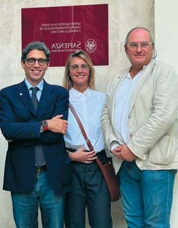
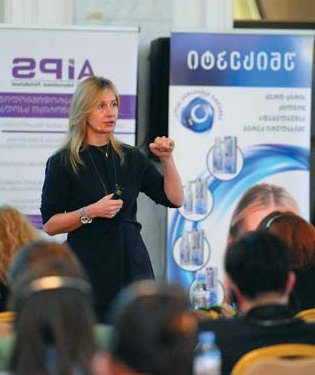
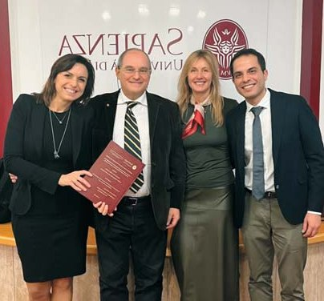
— А яку частину Ваших пацієнтів становлять пацієнти референтні, тобто спрямовані іншими лікарями?
— Дуже цікаве запитання. Ми не ведемо статистику щодо частки референтних пацієнтів, однак можемо сказати, що їх значна кількість. Ми щиро вдячні за довіру колег і особисто Вам, Сергію Володимировичу, адже Ви спрямовуєте до нас справжній «золотий фонд» пацієнтів — людей, які вже звикли до високого рівня допомоги, професійності та персональної уваги з Вашого боку протягом десятиліть. Це надзвичайна довіра, яку ми щиро цінуємо і намагаємося виправдовувати щодня. Для нас кожен пацієнт має велике значення, а найбільше задоволення у роботі — бачити результати лікування та відчувати щиру вдячність як від пацієнтів, так і від колег.
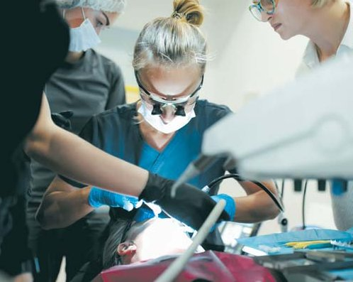
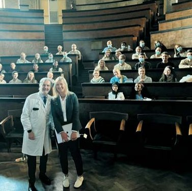
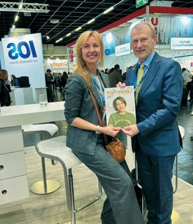
Треба триматися, зберігати гідність, витримку і разом працювати на Перемогу
— Зараз для Харкова, всіх харків'ян, і стоматологів також, дуже важкі часи… Щодня ми отримуємо звістки про нові прильоти всього, що тільки є у нашого агресивного сусіда… Однак стоматологія Харкова працює! Більше того, харківські стоматологи відкрили свої клініки і в інших містах України, і в інших країнах. Як це вдається вам, харківським стоматологам?
— Велика кількість харків'ян, які після початку повномасштабного вторгнення виїхали до інших міст і країн, приїжджають у рідне місто, щоб отримати стоматологічну допомогу. Так було у 2022–2023 роках. Завдяки цьому стоматологи мають роботу і можливість заробляти. А ті, хто залишився в Харкові, вважають за честь і обов'язок підтримати лікарів, які роками дбали про їхнє стоматологічне здоров'я. Якщо ще два роки тому планова професійна гігієна зубів, ортодонтичне лікування чи комплексна реабілітація не здавалися актуальними, то у 2024–2025 роках усе більше людей звертаються за такими послугами.
Так само, як ми вважаємо справою честі піти в улюблену кав'ярню, до перукаря чи фотографа — і заплатити, щоб підтримати своїх. Це наш спосіб бути разом і тримати тил. Ми так багато дали одне одному в цей непростий час! І це вже давно не лише про здоров'я ротової порожнини — це про щось значно глибше: про людяність, довіру і єдність. Я взагалі не чула, щоб хтось із харків'ян скаржився в ці дуже важкі часи. Для нашого міста характерне мовчання з глибоким підтекстом. Останні роки навчили нас не нарікати.
Чесно скажу: у мирні роки ми скаржилися набагато більше. А зараз — не прийнято. Бо важко всім харків'янам. І треба триматися, зберігати гідність, витримку і разом працювати на Перемогу. І якщо в таких умовах ми можемо працювати як стоматологи — це неймовірно! Це надихає. Це про силу.
Українські стоматологи — це рівень, який високо оцінюють і в Україні, і за її межами!
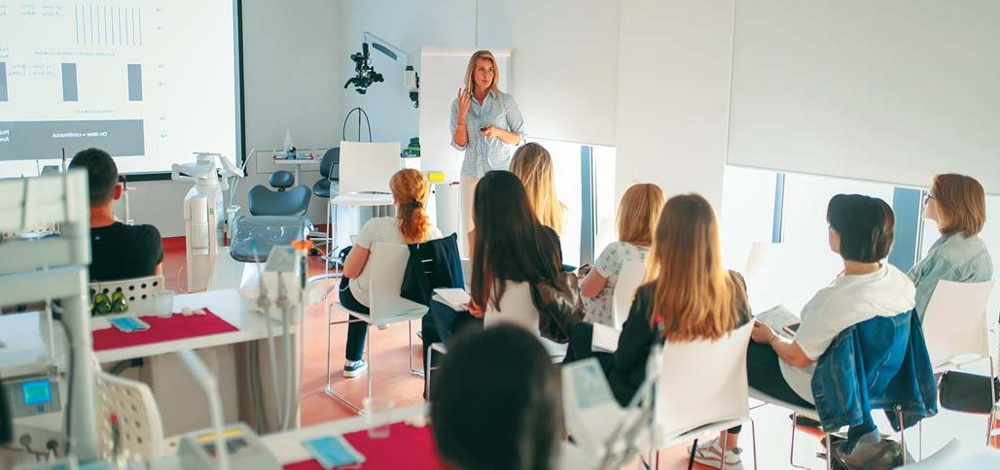
— Я знаю, що перший час після російського вторгнення Ви працювали в університетах Європи, і ми зустрілися тоді з Вами на виставці IDS в Кельні… Що дав Вам професійно і ментально цей період життя?
— У 2022 році багато іноземних колег кинулися мені на допомогу — і це по-доброму вражало. Сусіди, які живуть зовсім поруч, знищують твоє місто, вбивають твоїх людей, а водночас ті, з ким ти навіть не говориш однією мовою, простягають руку підтримки і допомагають без жодних умов. Пропозиції надходили з різних куточків світу — з Японії, США, Нідерландів, Італії та інших країн, і це була не просто моральна підтримка чи тимчасовий прихисток, а конкретні офіційні пропозиції роботи. Наприклад, запрошення у США терміном понад шість місяців, контракт на осінній семестр в Італії та безстрокова пропозиція з Франції і Німеччини. Уже навесні 2022 року я підписала кілька контрактів. І хоча влітку вже відчувала, що зможу повернутися в Україну, зобов'язання були чинними — і я мала їх виконати. У підсумку це зайняло близько 10 місяців.
У 2015 році на європейському конгресі з лазерної стоматології в Бухаресті моя доповідь про застосування діодного лазера в пародонтології отримала високу оцінку, і там я отримала запрошення на світовий конгрес у Японію, де познайомилася з багатьма науковцями, зокрема з професорами кафедри оральної патології Римського університету La Sapienza — Умберто Ромео та Алессандро Дель Веккіо. Саме вони порушили питання на рівні університету про можливість надати мені підтримку й запросили долучитися до роботи на кафедрі у 2022 році. Я безмежно вдячна їм за цю можливість. Завжди прагнула мати стажування та професійний досвід за кордоном — і цей період став для мене справжнім втіленням мрії.
Після цього я працювала консультанткою з лазерних технологій у США, в штаті Каліфорнія: відвідувала клініки, де фахівці нещодавно придбали лазерне обладнання, і допомагала їм опановувати принципи його безпечного та ефективного використання.
Що це мені дало? Існують напрямки, які у нас поки що слабко розвинені. Один із них — це оральна патологія. В Україні ця дисципліна ще не виділена окремо, тож саме про це я хотіла б більше говорити на курсах, конгресах і форумах. У європейських університетах існують окремі кафедри оральної патології, і студенти там вивчають широкий спектр відповідних захворювань. Наприклад, лікування радіаційного мукозиту або остеонекрозу щелеп, спричиненого вживанням певних медикаментів, усі захворювання слизової оболонки ротової порожнини — це надзвичайно цікавий напрям, який в Україні варто активно розвивати, починаючи з базової стоматологічної освіти.
До речі, під час роботи за кордоном я переконалася, що базовий рівень знань у зарубіжних колег справді дуже високий. Однак коли йдеться про мануальні навички, то тут рівень інколи може бути середнім або навіть низьким. Звісно, я можу судити лише про ті клініки, де працювала.
Отже, робота за кордоном була корисна з точки зору того, що можна привнести в нашу стоматологію, але вона також зміцнила мене в переконанні, що українські стоматологи — справжні професіонали!
— Ви мене здивували, адже зазвичай говорять, що нашим студентам бракує мануальної практики…
— За кордоном студентам не видадуть документ про освіту, доки вони не складуть нормативний мінімум мануальних навичок на всіх напрямках: в ортодонтії, ортопедії, хірургії… Базові знання і навички у зарубіжних стоматологів, як я вже говорила, на досить високому рівні. Однак спеціалізованих навичок, які ми з вами цінуємо, там я не зустрічала. Можливо, тому, що переважно працювала із загальними стоматологами, які займаються всіма напрямками, але для нас вони не є тим високим стандартом, до якого ми прагнемо.
А що я дала зарубіжним колегам? Наприклад, у США я працювала над концепцією, яка дозволила б створити чіткі протоколи лікування та сприяти ширшому впровадженню фотобіомодуляційної терапії. І сьогодні я вже бачу, як упевнено розвивається й рухається вперед цей напрям лазерної стоматології — і це надихає.
В Італії я була науковим керівником магістрантки, яка здобувала науковий ступінь з лазерних технологій у стоматології і гарно захистила свою роботу.
У Німеччині на той час тільки вводили страхову допомогу пацієнтам із захворюваннями пародонта. У клініці, де я працювала, я якраз і впроваджувала цей напрямок. Колеги були мені вдячні, бо у них цей напрямок не був розвинутий. Ми зазвичай говоримо, що у нас щось погано розвинене, але в тій німецькій клініці пародонтологія була зовсім не розвинута. Багато чого там впирається у страхову медицину, яка має свої плюси і мінуси. Тому не дивно, що наші земляки, зіткнувшись із проблемами у країнах тимчасового перебування, повертаються в Україну, щоб отримати допомогу у своїй стоматологічній клініці.
Викладачі часто робили компліменти моїм мануальним навичкам
— Цікаво, а як Ви взагалі вирішили стати стоматологом? Зазвичай я запитую: Ви обрали стоматологію чи стоматологія обрала Вас?
— Думаю, що стоматологія мене обрала, а не я стоматологію. Так буває: перед молодою людиною стеляться кілька професійних доріг, вона вагається, яку обрати, і тут обставини підштовхують до певного вибору, і то щастя, коли ця дорога, яка ніби сама тебе обрала, виявляється тією, де ти можеш реалізувати свої здібності, свій потенціал.
До здобуття медичної освіти мене спонукали батьки: батько — працівник МВС, мама — інженер-економіст, бо вони вважали медичні професії шанованими і таки умовили… Вже у 18 років я отримала освіту як медична сестра дитячих закладів і почала працювати операційною сестрою обласної дитячої лікарні. Я завжди прагнула здобути вищу освіту, а брат мого батька наполегливо радив вступати в медичний інститут, оскільки у нашій великій родині потрібні лікарі, і він бачив у мені майбутнього педіатра. Маючи диплом середнього спеціалізованого навчання з відзнакою, я в 1996 році вступила на стоматологічний факультет Харківського державного медичного університету.
Перший рік був дуже важкий, додатково ночами на вихідних я продовжувала працювати в операційній медсестрою, але мені вдалося закінчити університет із гарними оцінками. А далі все пішло легко. І триває так досі. Дуже вдячна моїм наставникам з кафедри терапевтичної стоматології за величезну підтримку. Вони часто робили мені компліменти щодо моїх мануальних навичок. Тоді я ще не зовсім розуміла, чому це так важливо, але це надихало — і залишилося в пам'яті. Так, стоматологія — це велика праця, це колосальні вимоги, це постійне оволодіння новітніми технологіями. Але це й творча професія, яка дає змогу відчути себе креативною, потрібною людям, а відтак — щасливою.
— А на своїх дітей Ви намагалися впливати, щоб вони пішли Вашим професійним шляхом?
— Так, мені дуже хотілося, щоб донька Єлизавета стала стоматологом, але у неї були свої інтереси. Їй 19 років, вона першокурсниця Мадридського університету, факультету міжнародних відносин. Синові Іллі — 21 рік, він завершує навчання в університеті в Нью-Йорку, здобуває фах у галузі фінансів, економіки та банківської справи. Те, що вони не обрали професію стоматолога, — це їхнє право і їхнє життя. Я жартувала: «Якщо ви не стоматологи, то мені вже байдуже, ким ви будете». Але, як кожна мати, я щиро бажаю їм успіху на тому шляху, який вони обрали. Зараз батько перейняв естафету турботи про майбутнє наших дітей — він часто дякує мені за те, як я їх виховала, а я йому — за те, що допоміг мені створити SENSE.
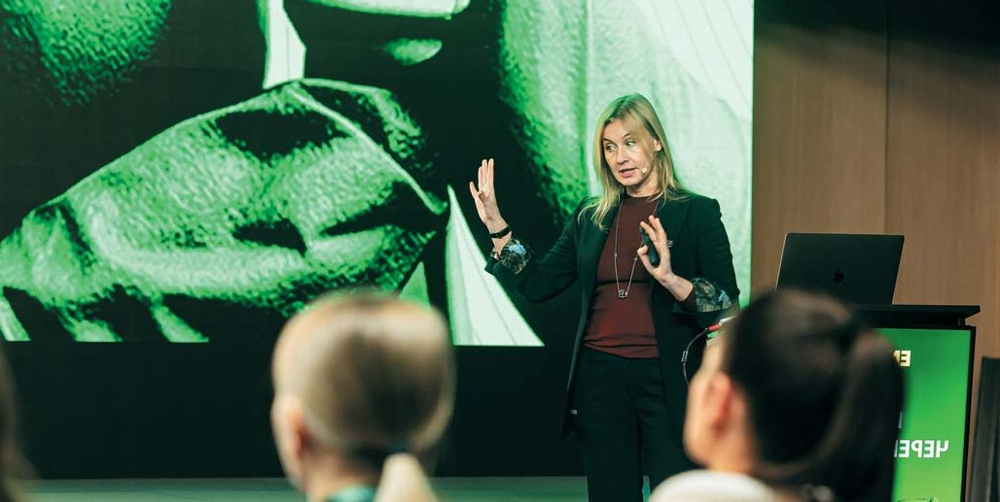
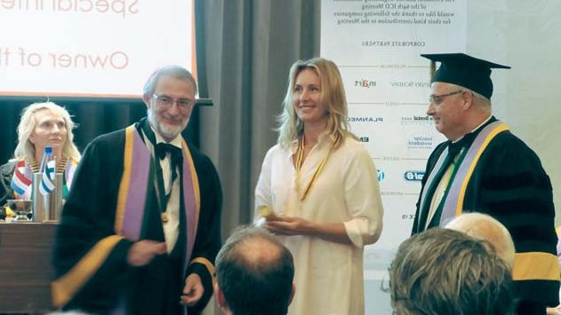
Чекаю на завдання від ICD
— Шість років тому Міжнародна колегія стоматологів запросила Вас до своєї спільноти, визнавши тим самим Ваші заслуги перед професією і суспільством, відповідність високим етичним стандартам… Як тепер, через кілька років, Ви оцінюєте своє місце в цій поважній міжнародній організації зі 100-річною історією?
— Для мене справді велика честь бути членом цієї шанованої спільноти. Але мало просто там числитися. Я всі ці роки чекаю великого технічного завдання від ICD. Хочеться зробити щось для неї, разом з нею…
— Серед функцій Міжнародної колегії стоматологів є така, як гуманітаризм. Щороку на наших зустрічах відбувається гуманітарний форум, і я вважаю, що нині є велика потреба в гуманітарних програмах для українських дітей, які втратили звичний спосіб життя через війну і в яких через це різко підвищився ризик карієсу, а вони не мають зв'язку зі своїми стоматологами, котрих знають з дитинства. Вони живуть в інших містах, інших спільнотах, навчаються в інших школах, і це все призводить і до стресу, і до росту інтенсивності карієсу, періодонтальних проблем. Тому гуманітарні програми для українських дітей під парасолькою ICD були б дуже корисними, і я сподіваюся, що Ви приєднаєтеся до таких ініціатив.
— Безперечно!
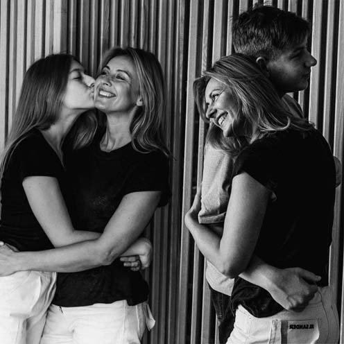
— Я знаю, що Ви повернулися з навчальної поїздки у сонячну, а може, й не дуже теплу Молдову, бо ж погода минулого тижня не дуже тішила, чув навіть анекдот: «Зиму перезимували, перезимуємо і весну». І заради інтерв'ю Ви навіть відмінили прийом пацієнтів, бо іншого часу для цієї розмови не було. Скажіть, а у Вас взагалі є вільний час, і якщо є, то що Ви тоді робите?
— 2025 рік розпочався досить напружено, але коли з'являється вільний час, я йду туди, куди кличе серце: до дітей або в ліс чи гори, щоб відновити сили. Окрім активних видів перезавантаження, одне з моїх хобі — працювати в саду. Ще рік тому я мала змогу їздити в родинний заміський будинок і бувати на природі. Але наш будинок опинився в «сірій зоні», він лише за 15 кілометрів від кордону з країною-агресором, неподалік Вовчанська, який тепер зрівняний із землею. Наше селище вже понад рік знемагає, і зараз проїзд туди заборонено. Тому на вихідні їжджу до друзів на дачні ділянки поблизу Харкова, де маю змогу трохи попрацювати в саду і відчути гармонію з природою.
А зимової пори у вільний час я пізнаю творчість художників різних країн і епох, і коли мандрую, то обов'язково відвідую головний художній музей міста. Так я відкриваю для себе творчість раніше не відомих мені митців, поринаю у світ якогось одного художника. За рік я для себе відкрила майстра експресії XX століття — Хайма Сутіна в Дюссельдорфі. У Мадриді мене глибоко вразили роботи Франсіско-Хосе де Гої, особливо його цикл «Чорні картини». А в Кишиневі мене зворушила величезна картина «Дружба» 1973 року Валентини Руссу-Чобану. На ній — гармонійні стосунки між націями, де панують мир і злагода. Боляче усвідомлювати, що й у XXI столітті людство не здатне втілити такі цінності у реальність…
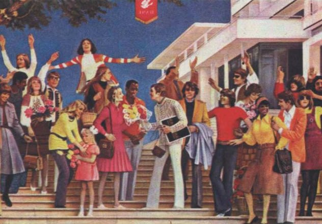
— Дякую за цікаві відповіді на мої запитання і прошу висловити свої побажання читачам журналу «ДентАрт», якому восени виповнюється 30 років…
— Насамперед хочу щиро подякувати всій команді, яка вже 30 років забезпечує вихід журналу «ДентАрт». Я буквально виросла на його сторінках і пам'ятаю часи, коли «ДентАрт» передавали з рук у руки — під розписку! Ці три десятиліття його існування — справжня епоха. І дуже хочеться, щоб журнал продовжував виходити, залишаючись джерелом професійного зростання для стоматологів. На його сторінках ми маємо змогу не лише ділитися власним досвідом, а й знайомитися з найновішими технологіями, матеріалами, підходами до лікування. «ДентАрт» — це більше, ніж просто видання. Це простір професійної спільноти, який об'єднує нас навколо спільних цінностей, знань і прагнення бути кращими. Тож — ще багато років розвитку, натхнення і вдячних читачів!
— Ви серед авторів журналу, і я запрошую Вас до активної співпраці, бо Вам є чим поділитися з колегами…
— Дякую! Із задоволенням приймаю це запрошення, адже вважаю: якщо маєш досвід і знання — треба ними ділитися.
Читацька аудиторія журналу — дуже різна, і це прекрасно.
Стоматологам-початківцям хочу побажати не втрачати жаги до навчання, не боятися запитувати і постійно вдосконалюватися. Не зупиняйтеся, навіть якщо щось не вдається з першого разу — шлях до майстерності завжди непростий, але надзвичайно цікавий.
А досвідченим колегам — зберігати відкритість до нового, бо саме ми маємо бути рушієм розвитку професії. Наш приклад, наші знання й ставлення до пацієнтів формують обличчя української стоматології — вдумливої, відповідальної, гуманної…
Нехай усі ми надихаємося одне від одного — і йдемо вперед, разом!
— Так, вперед, до нових вершин і перемог!
Розмовляв Сергій Радлінський
Фото з архіву Юлії Черепинської